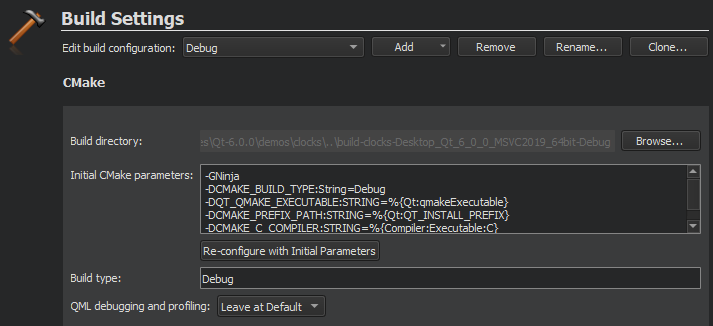
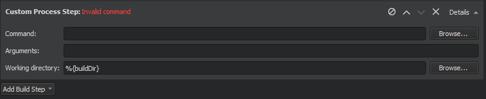
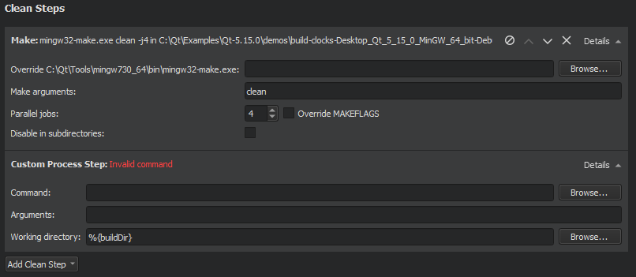

Specifying Build Settings
Different build configurations allow you to quickly switch between different build settings. By default, Qt Creator creates debug, release, and profile build configurations. A debug build contains additional debug symbols that you need for debugging the application but that you can leave out from the release version. Generally, you use the debug configuration for testing and the release configuration for creating the final installation file.
If you selected CMake as the build system for the project, you can use a minimum size release build configuration to create the final installation file. It is a release build that makes the size of the binary package as small as possible, even if this makes the application slower.
A profile build (which is called release with debug information when using CMake) is an optimized release build that is delivered with separate debug information. It is best suited for analyzing applications.
Managing Build Configurations

You specify build settings in the Projects mode. To add a new build configuration, click Add and select the type of configuration you would like to add. The options you have depend on the build system that you selected for the project. You can add as many build configurations as you need. You can also select Clone to add a build configuration that is based on the currently selected one.
Select Rename to give the currently selected build configuration a new name.
To delete the build configuration currently selected, click Remove.
Editing Build Configurations
Select the build configuration to edit in the Edit build configuration field.
The available build settings depend on the build system that you selected for the project:
This topic describes the build settings at a general level.
For more information about debugging Qt Quick projects, see Setting Up QML Debugging.
Starting External Processes
Qt Creator executes external processes to accomplish tasks such as building and running applications. To execute the processes, Qt Creator uses shell commands that are native to the system. It constructs the commands from an executable name and optional command line arguments.
The executable name is specified in the executable fields: qmake, Make, Command, or Executable. It is either derived from the project or specified manually. When you specify executables manually, you can reference environment variables and Qt Creator variables. However, no quoting rules apply.
You can specify command-line arguments in the arguments fields: Arguments, Additional arguments, CMake arguments, Command arguments, Default arguments, Extra arguments, Make arguments, or Tool arguments. You can create shell command lines that can contain redirection and other advanced constructs. However, some more complex use cases, such as piping test data into the application being tested or grouping commands, are not supported because the value of the Executable field is always placed first when constructing the command.
You can use environment variables as values in the fields. In addition, you can use Qt Creator variables in arguments, executable paths, and working directories.
Build Steps

In Build Steps, you can change the settings for the build system selected for building the project:
You can use IncrediBuild to accelerate the build process when using qmake or CMake.
Adding Custom Build Steps
To add custom steps to the build settings, select Add Build Step > Custom Process Step.
By default, custom steps are enabled. To disable a custom step, select the (Disable) button.

Executing Custom Commands
To execute custom commands when building for embedded devices, select Add Build Step > Custom Remote Command (via adb shell) (commercial only) and enter the command to execute.
Clean Steps

You can use the cleaning process to remove intermediate files. This process might help you to fix obscure issues during the process of building a project using:
- CMake
- qmake
- Qbs
- Meson
- IncrediBuild
You can define the clean steps for your builds in Clean Steps.
- To add a clean step using make or a custom process, click Add Clean Step and select the type of step you want to add.
By default, custom steps are enabled. To disable a custom step, select the Disable button.
- To remove a clean step, click Remove Item.
- To change the order of steps, click
 (Move Up) and
(Move Up) and  (Move Down).
(Move Down).